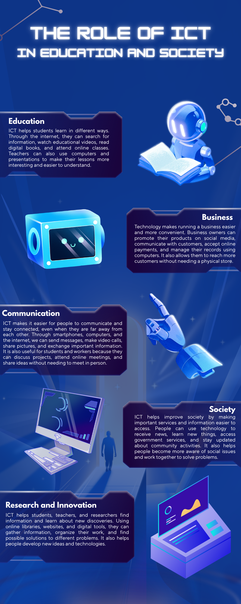

ICT Infographic
The Role of ICT in Education and Society
Output 3 – ICT Infographic
Title: The Role of ICT in Education and Society
Create an informative infographic that presents the different roles and importance of Information and Communication Technology (ICT).
- At least 5 important uses of ICT.
- Benefits of ICT in education.
- Benefits of ICT in business.
- Benefits of ICT in communication.
- Benefits of ICT in society.
Website display: Infographic image with a short description.

Conclusion
In conclusion, ICT has become a big part of our everyday lives. It helps us in many ways, especially when it comes to studying, working, communicating, and finding information. As students, we can use technology to learn new things, do our school activities, and improve our knowledge. It also helps businesses serve their customers better and allows people to stay connected even if they are far from each other. Because of technology many things that used to take a lot of time can now be done more easily and quickly. However, we should not forget that using ICT also comes with responsibilities. We need to be careful about what we share online, respect other people, and avoid using technology in harmful ways. In the end, ICT is very useful in making our lives more convenient but it is our responsibility to use it in a positive and proper way.